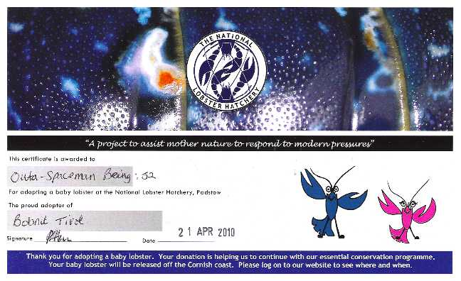
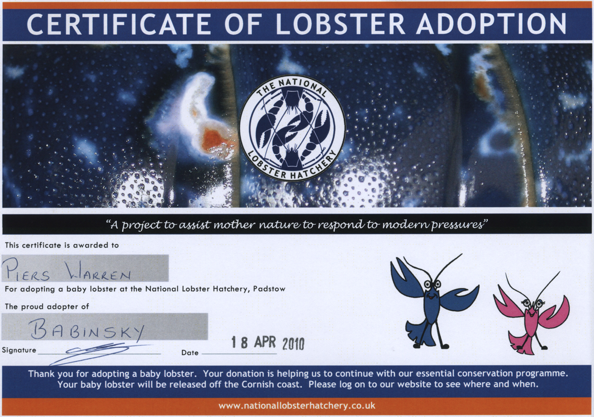
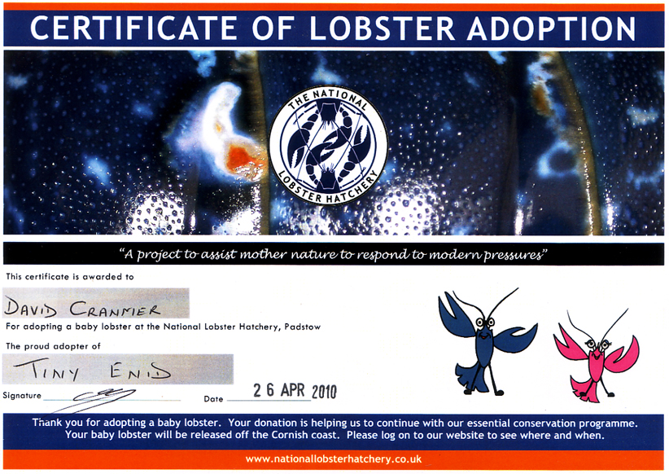

Sunday, April the 25th, 2010
back to: title, date or indexes
Last week, you will recall, I issued a ukase that Hooting Yard readers must adopt a lobster. I am pleased to note that Babinsky and Bobnit Tivol have been named and adopted and are presumably clacking away in the vicinity of Padstow.


UPDATE : Now joined by Tiny Enid!
